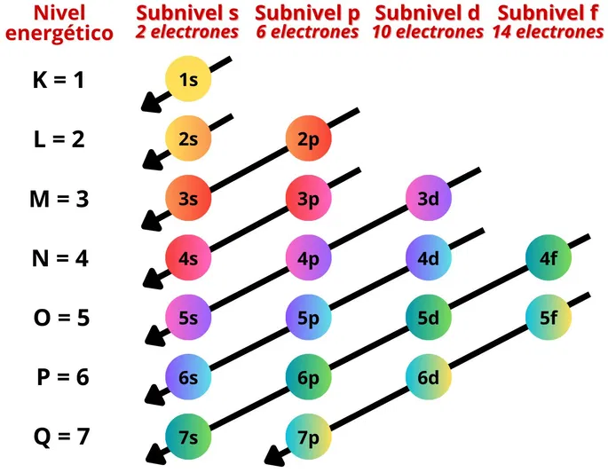

Esta es la Página 4
1. Historia de la tabla periódica
La tabla periódica fue desarrollándose con el tiempo, pero fue Dmitri Mendeléyev (1869) quien organizó los elementos según sus propiedades químicas y masas atómicas. Más adelante, Henry Moseley reordenó los elementos por su número atómico, como la conocemos hoy.

2. Configuración electrónica
La configuración electrónica indica cómo se distribuyen los electrones en los niveles y subniveles de energía de un átomo. Ejemplo: Oxígeno (O): 1s² 2s² 2p⁴.
Reglas básicas: Principio de Aufbau, Principio de exclusión de Pauli, y la Regla de Hund.
3. Iones: aniones y cationes
Un ion es un átomo con carga eléctrica. Si pierde electrones se convierte en un catión (positivo), y si gana electrones se convierte en un anión (negativo).
Ejemplos: Na → Na⁺ (catión), Cl → Cl⁻ (anión)

4. La materia y sus estados
La materia es todo lo que tiene masa y ocupa espacio. Sus estados físicos son:
- Sólido
- Líquido
- Gaseoso
- Plasma
- Condensado de Bose-Einstein
5. Estructura atómica
El átomo está formado por protones (positivos), neutrones (sin carga) en el núcleo, y electrones (negativos) girando en los niveles de energía. El número de protones determina el elemento (número atómico).

6. Historia de la química
Desde la antigüedad con los griegos, pasando por la alquimia en la Edad Media, hasta la ciencia moderna con Lavoisier (quien propuso la ley de conservación de la masa). En los siglos XIX y XX se desarrollaron teorías atómicas, orgánicas y la tabla periódica actual.
7. Clasificación de los elementos químicos
Se clasifican por:
- Metales, no metales y metaloides
- Grupos (columnas) y periodos (filas)
- Estados físicos: sólidos, líquidos, gases
- Naturaleza química: representativos, transición, lantánidos, actínidos